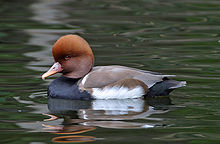
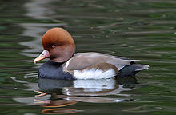

| Red-crested Pochard | |
|---|---|
|  | |
| Conservation status | |
| Binomial name | |
| Netta rufina (Pallas, 1773) |
| Red-crested Pochard | |
|---|---|
|  | |
| Conservation status | |
| Binomial name | |
| Netta rufina (Pallas, 1773) |
The Red-crested Pochard (Netta rufina) is a large diving duck.
Their breeding habitat is lowland marshes and lakes in southern Europe and southern and central Asia. They are somewhat migratory, and northern birds winter further south and into north Africa.
_I_IMG_1589.jpg)
The adult male is unmistakable. It has a rounded orange head, red bill and black breast. The flanks are white, the back brown, and the tail black. The female is mainly a pale brown, with a darker back and crown and a whitish face.
These are gregarious birds, forming large flocks in winter, often mixed with other diving ducks, such as other pochards. They feed mainly by diving or dabbling. They eat aquatic plants, and typically upend for food more than most diving ducks.
Red-crested pochards build a nest by the lakeside among vegetation and lay 8-12 pale green eggs. The birds' status in the British Isles is much confused due to the fact that there have been many escapes and deliberate releases over the years, as well as natural visitors from the continent. However, it is most likely that they are escapees that are now breeding wild and have built up a successful feral population. They are most numerous around areas of England including Gloucestershire, Oxfordshire and Northamptonshire. Wild birds occasionally turn up at places such as Abberton Reservoir, Essex.
The Red-crested Pochard is one of the species to which the Agreement on the Conservation of African-Eurasian Migratory Waterbirds (AEWA) applies.

{kind=link}